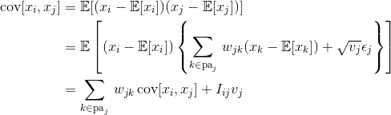

Math and Me
My love affair with math started when I was young. I was very interested in the subject. Exploring the boundaries of what was being taught by my teachers. Somewhere in my teenage years I abandoned my passion for math for less substantials pursuits. Thankfully, when I returned to school in 2009 I revisited the subject and fell back in love. My interest in math lies in mainly in three separate camps: probalbilty and statistics, data analysis and visualization, and numerical analysis.
Statistics and Probability

There are two main groups of statisticians. There are those that subscribe to the Bayesian school of thought. The Bayesians are those that follow Bayes theorem and use conditional probabilities to include informations about prior observations. The second group are the Frequentists. These statisticians do not consider
Data Visualization
;lkad;fklajds;fkljas;lkfjas;dkljfa;slkdjf;aslkdjf;adslkjf;askljdf;aslkdjf
Numerical Analysis